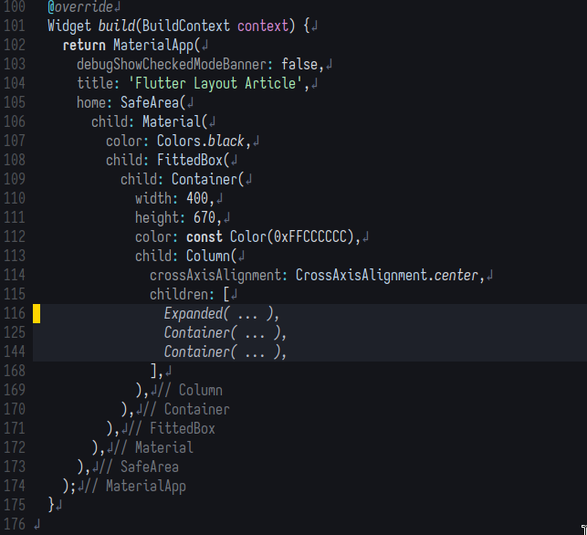
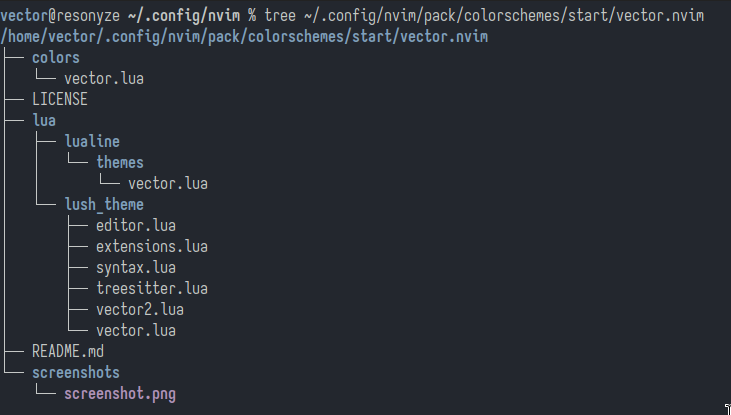
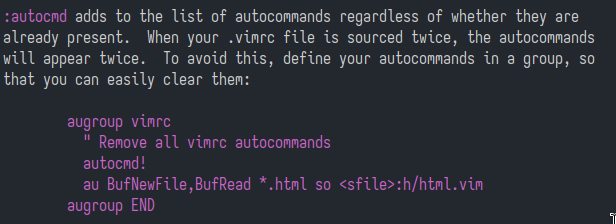

neovim
tabs vs spaces :)
Tabs Reasoning: Tabs are for indentation. The editor decides how a tab character is displayed. I find 3 spaces to be most visually apprpriate.
-- Insert tabs but they appear like 3 spaces
vim.opt.expandtab = false
vim.opt.tabstop = 3
vim.opt.shiftwidth = 3
vim.opt.softtabstop = 3
vim.opt.list = true
vim.opt.listchars = "tab:» ,eol:↲,nbsp:+,trail:-"
Spaces reasoning: What you see is what it is: if indentation has 3 spaces, its 3 spaces. If its 8 its a tab. We only use spaces. So when we press 'Tab' for indent, we want spaces to be inserted as opposed to a tab character.
-- The representation of a tab in spaces (or more precisely, columns)
vim.opt.tabstop = 8
vim.opt.shiftwidth = 2
-- When enabled uses spaces instead of tab characters
vim.opt.expandtab = true
vim.opt.softtabstop = 2
vim.optpt.list = true
vim.opt.listchars = "tab:» ,eol:↲,nbsp:+,trail:-"
Folding dart/flutter code with treesitter in neovim

Using :InspectTree I see that the nodes I want folded are selector, named_argument
and list_literal.
In the code below, I bind the function that folds to <C-f> or Ctrl + f.
local fold_named_arg_func = function()
local allowed_types = {
["selector"] = true,
["named_argument"] = true,
["list_literal"] = true
}
local ts_utils = require('nvim-treesitter.ts_utils')
local winid = vim.fn.bufwinid(1)
local nuc = ts_utils.get_node_at_cursor(winid)
local cn = nuc
while cn ~= nil and allowed_types[cn:type()] == nil
do
cn = cn:parent()
end
local start_row
local end_row
if cn ~=nil then
start_row, _, end_row, _ = cn:range()
vim.cmd(start_row + 1 .. "," .. end_row + 1 .. "fold")
end
end
vim.keymap.set('n', '<C-f>', function()
local fold_level = vim.fn.foldlevel('.')
local fold_closed = vim.fn.foldclosed('.')
if fold_level > 0 then
if fold_closed == -1 then
fold_named_arg_func()
else
vim.cmd("foldopen")
end
else
fold_named_arg_func()
end
end)
In conjunction to the above, I also modded how folds appear in neovim because the default implementation didn't preserve code indendation.
vim.opt.fillchars = { eob = "-", fold = " " }
vim.opt.foldtext = 'v:lua.MyFoldText()'
function MyFoldText()
local start_line = vim.fn.getline(vim.v.foldstart)
local end_line = vim.fn.getline(vim.v.foldend)
end_line = end_line:gsub("^%s+", "")
return start_line .. " ... " .. end_line
end
vim.keymap.set("v", "<C-f>", ":fold<CR>", { desc = "fold" })
Alternatively (what I do now), is to fold all nodes. If the node isn't multiline, fold its parent instead.
local fold_node = function ()
local ts_utils = require('nvim-treesitter.ts_utils')
local cn = ts_utils.get_node_at_cursor(0)
while cn ~= nil
do
local node_start_row, _, node_end_row, _ = cn:range()
if node_end_row == node_start_row then
cn = cn:parent()
else
vim.cmd(node_start_row + 1 .. "," .. node_end_row + 1 .. "fold")
break
end
end
end
vim.keymap.set('n', '<C-f>', function()
local fold_level = vim.fn.foldlevel('.')
local fold_closed = vim.fn.foldclosed('.')
if fold_level > 0 then
if fold_closed == -1 then
-- fold_named_arg_func()
fold_node()
else
vim.cmd("foldopen")
end
else
-- fold_named_arg_func()
fold_node()
end
end)
Steps to use shipwright to export lush.nvim themes
source: https://github.com/rktjmp/lush.nvim/blob/main/BUILD.md#exporting-a-colorscheme-to-configurable-lua
I) Install shipwright
Since I don't use a package manager..
Create files shipwright_build.lua and colors/vectorspacexyz.lua
touch ~/.config/nvim/pack/colorschemes/start/shipwright.nvim/lua/shipwright_build.lua
mkdir ~/.config/nvim/pack/colorschemes/start/shipwright.nvim/lua/colors
touch ~/.config/nvim/pack/colorschemes/start/shipwright.nvim/lua/colors/vectorspacexyz.lua
shipwright_build.lua:
local colorscheme = require("lush_theme.vector")
local lushwright = require("shipwright.transform.lush")
run(colorscheme,
lushwright.to_lua,
{patchwrite, "colors/vectorspacexyz.lua", "-- PATCH_OPEN", "-- PATCH_CLOSE"})
How did you get "lush_theme.vector" here? vector.lua is the name of the file that contains highlight definitions in my lush colorscheme project:

vectorspacexyz.lua:
-- colors/colorscheme.lua
local colors = {
-- content here will not be touched
-- PATCH_OPEN
-- group data will be inserted here
-- PATCH_CLOSE
-- content here will not be touched
}
-- colorschemes generally want to do this
vim.cmd("highlight clear")
vim.cmd("set t_Co=256")
vim.cmd("let g:colors_name='my_theme'")
-- apply highlight groups
for group, attrs in pairs(colors) do
vim.api.nvim_set_hl(0, group, attrs)
end
Now open the file ~/.config/nvim/pack/colorschemes/start/shipwright.nvim/lua/shipwright_build.lua
and run Shipwright
Need for augroups

In lua, you'd need to use { clear = true, }
local lspautocmds = vim.api.nvim_create_augroup('LSPAutoCmds', { clear = true, })
vim.api.nvim_create_autocmd("LspAttach", {
group = lspautocmds,
callback = function(args)
local bufnr = args.buf
local client = vim.lsp.get_client_by_id(args.data.client_id)
vim.keymap.set('n', 'gd', vim.lsp.buf.definition, { buffer = bufnr, desc = '[G]o to [D]efinition' })
vim.keymap.set('n', 'gD', vim.lsp.buf.declaration, { buffer = bufnr, desc = '[G]o to [D]eclaration' })
vim.keymap.set('n', '<Leader>ca', vim.lsp.buf.code_action, { buffer = bufnr, desc = '[C]ode [A]ction' })
vim.keymap.set('n', '<Leader>rn', vim.lsp.buf.rename, { buffer = bufnr, desc = '[R]e[n]ame' })
vim.keymap.set('n', 'K', vim.lsp.buf.hover, { buffer = bufnr, desc = 'Hover Documentation' })
vim.api.nvim_buf_create_user_command(bufnr, 'Format', function(_)
vim.lsp.buf.format()
end, { desc = 'Format current buffer with LSP' })
vim.keymap.set('n', '[d', vim.diagnostic.goto_prev, { desc = 'Go to previous diagnostic message' })
vim.keymap.set('n', ']d', vim.diagnostic.goto_next, { desc = 'Go to next diagnostic message' })
vim.keymap.set('n', '<leader>e', vim.diagnostic.open_float, { desc = 'Open floating diagnostic message' })
vim.keymap.set('n', '<leader>q', vim.diagnostic.setloclist, { desc = 'Open diagnostics list' })
end
})
LSP Request
local function test(err, result, ctx)
vim.api.nvim_buf_set_lines(5, 0, -1, true, vim.split(result.contents.value, '\n'))
end
vim.lsp.buf_request(0, "textDocument/hover", vim.lsp.util.make_position_params(0), test)
Using LSP without nvim lspconfig
I'm not a fan of lspconfig because I think it abstracts too much of how neovim functions behind obscure lua code. Imo, you really don't need to be that proficient in lua before you can figure out what's happening behind the scenes with your editor.
If your goal is to be proficient in neovim and lua such that you can write your own scripts when the need rises, you should imo try to do without lspconfig.
All that happens really is that neovim launches a particular binary, with particular settings when a particular filetype is opened.
This is all you need to have in your init.lua to set up lua language server:
vim.api.nvim_create_autocmd('FileType', {
pattern = 'lua',
callback = function(ev)
vim.lsp.start({
name = "lua_ls",
cmd = { 'lua-language-server' },
root_dir = vim.fs.root(ev.buf, { '.luarc.json', '.luarc.jsonc' }),
settings = {
Lua = {
runtime = {
version = "LuaJIT",
},
workspace = {
library = {
"/usr/share/nvim/runtime",
}
},
},
},
})
end,
})
Its so obvious what's going on right? We just create an autocommand. Whenever a
filetype lua is opened, the function in callback gets executed. All that
function does is launches the binary of language server. Now, if you've ever
looked into the differences between treesitter and lsp, you might know that
unlike treesitter the lsp is aware of your project as a whole. It knows what
you should import from another file so that the variables in the current file
you're editing is in scope. For that to happen, you need to let the lsp know
which directory is the root of the project. This is why there's a root_dir
argument.
You can find out what goes into settings argument by reading the
documentation of the specific language server and by checking out server-configurations
page in nvim-lspconfig:
https://github.com/neovim/nvim-lspconfig/blob/master/doc/server_configurations.md
In lua for example, this section reveals what the settings should be:
client.config.settings.Lua = vim.tbl_deep_extend('force', client.config.settings.Lua, {
runtime = {
-- Tell the language server which version of Lua you're using
-- (most likely LuaJIT in the case of Neovim)
version = 'LuaJIT'
},
-- Make the server aware of Neovim runtime files
workspace = {
checkThirdParty = false,
library = {
vim.env.VIMRUNTIME
-- Depending on the usage, you might want to add additional paths here.
-- "${3rd}/luv/library"
-- "${3rd}/busted/library",
}
-- or pull in all of 'runtimepath'. NOTE: this is a lot slower
-- library = vim.api.nvim_get_runtime_file("", true)
}
})
Additional example (dart language server):
vim.api.nvim_create_autocmd('FileType', {
pattern = 'dart',
callback = function(ev)
vim.lsp.start({
name = "dartls",
cmd = { 'dart', 'language-server', '--protocol=lsp' },
root_dir = vim.fs.root(ev.buf, { 'pubspec.yaml' }),
init_options = {
closingLabels = true,
flutterOutline = true,
onlyAnalyzeProjectsWithOpenFiles = true,
outline = true,
suggestFromUnimportedLibraries = true
},
settings = {
dart = {
completeFunctionCalls = true,
showTodos = true,
},
},
})
end,
})
Installing packages without package manager
Place the package in ~/.config/nvim/pack
Eg: Treesitter installation
cd ~/.config/nvim/pack
mkdir -p treesitter/start
cd treesitter/start
git clone 'https://github.com/nvim-treesitter/nvim-treesitter.git'
When you want to install a package, say nvim-treesitter, and you place it pack/
set tw=80 for markdown files
file: ~/.config/nvim/lua/core/autocmds.lua
local group = vim.api.nvim_create_augroup("VectorClearAu", { clear = true })
vim.api.nvim_create_autocmd('FileType', {
pattern = "markdown",
callback = function()
vim.opt.tw = 80
end,
group = group,
})
Autocommands
source: TJ Devries YT
test.lua:
BufEnter is an event. Autocommands are tied to events. To see more about events :h events
To check autocmds tied to a particular event: :au BufEnter
To clear autocmds attached to particular event: au! BufEnter
As it is, if test.lua file is executed again, it greates another autocmd. So "Hello"
gets print twice with every BufEnter event. This is why augroup is used.
Creating augroup:
local group = vim.api.nvim_ceate_augroup("SmashThatLikeButton", { clear = true })
-- if it was { clear = false } we'd get the old behavior
vim.api.nvim_create_autocmd('BufEnter', { command = "echo 'Hello 1'", group = group })
vim.api.nvim_create_autocmd('BufEnter', { command = "echo 'Hello 2'", group = group })
Now every time the file gets created, the autogroup gets cleared before its created, and with it the autocmds part of the group also gets cleared.
Now, this might be the feature that we're gonna use more often —lua functions triggered
by events.
local group = vim.api.nvim_ceate_augroup("SmashThatLikeButton", { clear = true })
-- if it was { clear = false } we'd get the old behavior
vim.api.nvim_create_autocmd('BufEnter', { command = "echo 'Hello 1'", group = group })
vim.api.nvim_create_autocmd('BufEnter', { callback = function()
print("Hello")
end, group = group })
Screenshots to markdown
This script both gets the latest file in ~/Pictures where my screenshots are and then copies them to img/ folder
in the same folder where the file is being edited.
local M = {}
M.insert_screenshot_markdown = function()
local bufno = vim.api.nvim_get_current_buf()
local winid = vim.fn.bufwinid(bufno)
local path = vim.api.nvim_buf_get_name(bufno)
local pathtofile = vim.fn.fnamemodify(path, ':h')
local img_dir = pathtofile .. "/img"
local stat = vim.loop.fs_stat(img_dir)
local dir_exists = stat and stat.type == 'directory'
if not dir_exists then
local success, err = vim.loop.fs_mkdir(img_dir, 511)
if not success then
print("Unable to create dir")
return 1
end
end
local directory = vim.fn.expand('~/Pictures')
local cmd = "ls -t " .. directory .. " | head --lines 1"
local newest_file = vim.fn.system(cmd)
newest_file = newest_file:gsub("\n", "")
local cmd2 = "cp " .. directory .. "/" .. newest_file .. " " .. img_dir
vim.fn.system(cmd2)
if newest_file ~= "" then
local markdown_link = string.format("", newest_file, newest_file)
local row, col = unpack(vim.api.nvim_win_get_cursor(winid))
local lines = vim.api.nvim_buf_get_lines(bufno, row - 1, row, false)
-- Check if the 'lines' table is empty
local line = ""
if #lines ~= 0 then
line = lines[1]:gsub("\n", " ")
end
local new_line = line .. markdown_link
vim.api.nvim_buf_set_lines(bufno, row - 1, row, false, { new_line })
vim.api.nvim_win_set_cursor(winid, { row, col + #markdown_link })
end
end
return M
The above script is placed in ~/plugins and it gets picked up by neovim lazy.nvim because of this mention
in ~/.config/nvim/lua/plugins/vector.lua:
{
dir = "/home/vector/plugins/markdown-screenshot.nvim",
config = function()
vim.keymap.set({ 'n', 'i' }, '<Leader>p',
function()
require("markdown-screenshot").insert_screenshot_markdown()
end,
{ desc = "Paste screenshot" })
end
},
Scripting workflow
:vnew ~/.config/nvim/lua/development/ss.lua
:echo nvim_get_current_buf()
1
local bufno = 1
local path = vim.api.nvim_buf_get_name(bufno)
Getting treesitter root
local parser = vim.treesitter.get_parser(5, "dart", {})
local tree = parser:parse()[1]
local root = tree:root()
Visual range
local cursorpos = vim.fn.getpos('.')
local vstart = vim.fn.getpos('v')
-- { 0, 31, 4, 0 jo}
-- row: cursorpos[2] row: vstart[2]
-- col: curspor[3], col: vstart[3]
Note
to
is visual selection in vim. Note the return value
local result = {} --string[]
local op1 = vim.fn.getpos('v')
local op2 = vim.fn.getpos('.')
table.insert(result, vim.inspect(op1))
table.insert(result, vim.inspect(op2))
vim.api.nvim_buf_set_text(19, 0, -1, result)
-- note 19 is output buffer
Dealing with visual ranges (incomplete)
local outputbuf = 10
local inputbuf = 1
local inputwin = 1000
local cursorpos = vim.api.nvim_win_get_cursor(1000)
local visualstart = vim.fn.getpos('v')
vim.api.nvim_buf_set_lines(outputbuf, 0, -1, false, {
string.format("Row: %s Column: %s", cursorpos[1], cursorpos[2]),
string.format("Row: %s Column: %s", visualstart[2], visualstart[3])
})